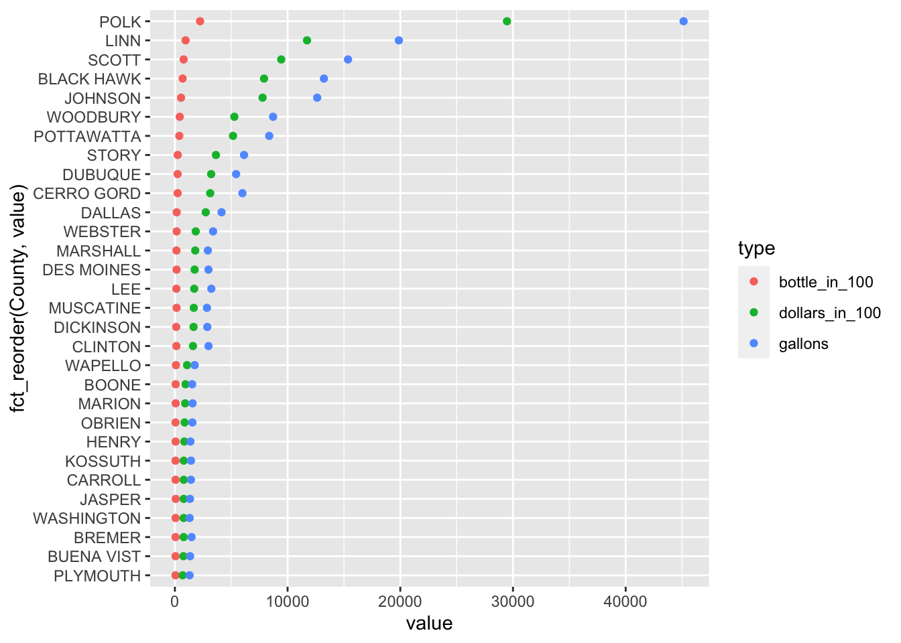
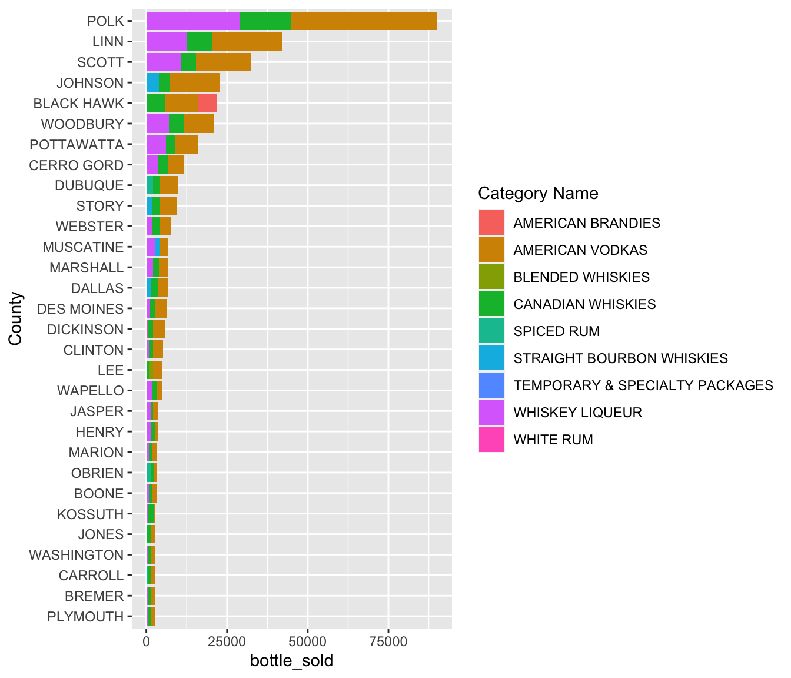
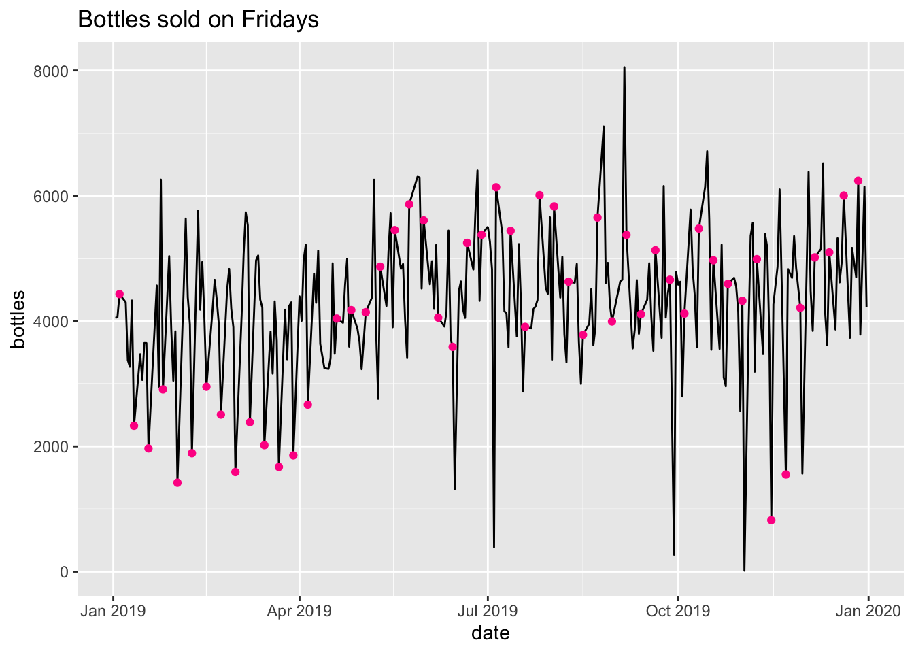

Chapter 4 Results
4.1 People’s drinking preferences
To explore the drinking preferences of the people of Iowa, we identified the twenty best-selling liquors in Iowa. We chose a bubble chart to show as much data as possible. In a bubble chart, we can use horizontal and vertical coordinates, bubble color, and bubble size to present as much data as possible. Furthermore, we use plotly to generate interaction function.
The graph shows that Iowa residents have a clear preference for American Vodkas and Canadian Whiskies. These two liquors are far ahead of other brands in terms of sales. All other liquor sales are concentrated within a range of approximately 1M. Secondly, the factor of price does not play a very significant role in the consumption of liquor. The high sales volume like Canadian Whiskies, it is not cheap the average price is 14.439. Some cheaper liquors, such as American Dry Gin, Blended Whiskies, are no more popular than 100% Agave Tequila.
Then, we wanted to know which liquors are good for bulk purchases as well as family gatherings in Iowa. Is the reason for the high sales in the previous chart a large volume purchase?
In this graph, American Vodkas and Canadian Whiskies unsurprisingly leads the pack, except that Whiskies Liqueur is the newest popular object and people like to buy them in bulk. The barchat shows, respectively, how many bottles of this liquor people buy at a time. In terms of purchase volume, Whiskies Liqueur is the most likely to be bought in groups, people often buy 96 bottles at a time. In general, bulk purchases are not very common, and buying 12 bottles at a time is a favorite.
4.2 Regional perspective
Note that the echo = FALSE parameter was added to the code chunk to prevent printing of the R code that generated the plot.

The dataset includes three events (bottles sold in hundreds, sales in hundreds of dollars, and volume sold in gallons) for 99 counties. For demonstration purposes, only the top 30 counties are included in the graph (ordered by the number of bottles sold).
The three events exhibit a positive correlation

For demonstration purposes, only the top three best-selling liquor categories for the top 30 counties.
Among 53 different liquor types, nine appeared to be the top-selling category for the selected counties. In addition, whisky and vodka are frequently among the top-selling categories for the selected counties.
The map shows each county’s liquor sales (in dollars) with dark blue being the county with the highest dollar sales.
We notice that counties with higher sales are most likely to include larger cities, suggesting that liquor sales are proportional to county population.
Since sales are positively correlated to total bottles_sold and volume_sold (shown earlier with Cleveland dot plot), we speculate that the latter two variables are also proportional to county population.
4.3 Timing perspective

There is a slight increase in the total amount of bottles sold in all categories of liquor from January to December in 2019.
The daily amount of bottles sold mainly clusters between 3000 and 5000.
The plot shows there are several low values and one zero in daily amount of bottles sold. We speculate that the data is not complete these days.

The plot shows that people in Iowa do not purchase as much liquor in the first quarter in 2019 as they do in the other quarters.
There is a significant increase in monthly bottles sold from March to April in 2019. The increase is approximately 22500 bottles.
It is initially assumed that the consumption of liquor during the first quarter of the year is higher since the weather is cold, which contradicts what the data illustrates. We speculate the reason is that people tend not to go out as often due to the cold and snowy weather.

In the first quarter of 2019, the daily bottles sold on Fridays cluster near 2000. After the first quarter, the daily bottles sold on Fridays cluster near 5000.
In the first quarter, the daily bottles sold on Fridays are often at the lower end among other days of the week. After the first quarter, it gradually shifts to a higher position.
The data set does not include any Sunday data. Saturday data is partially included, and it is not possible to draw informative conclusions from incomplete data.
There is no observable difference in the trend in liquor sales among weekdays.
The purple region highlights the bottles sold during Thanksgiving Holiday and the green region highlights the bottles sold during Christmas.
However, the sales of liquor during the holiday seasons is not as high as expected since not all the stores open during holidays and people tend to prepare liquor before holidays.